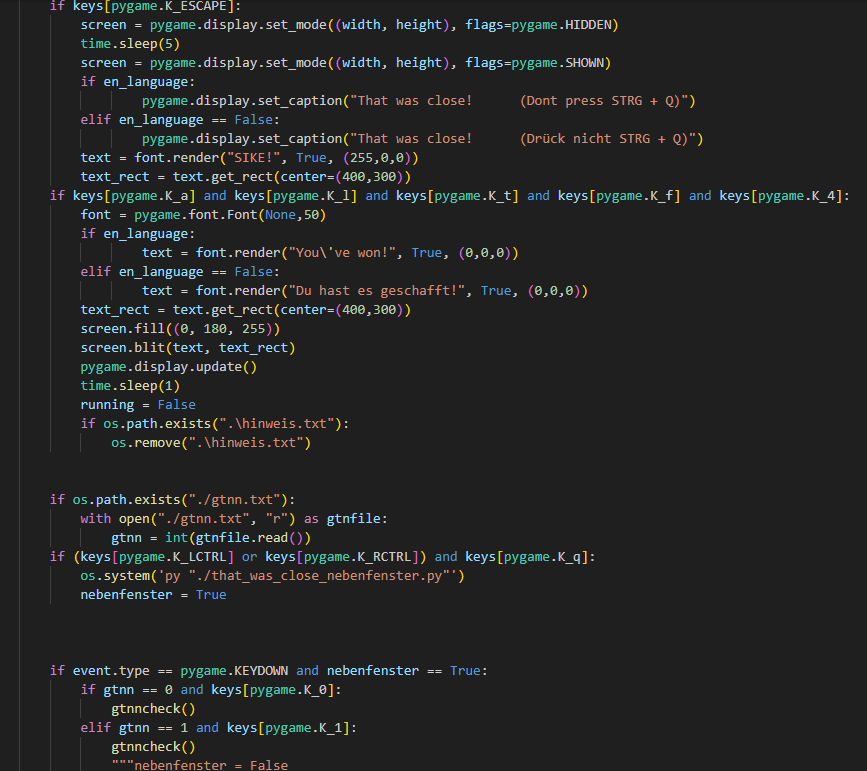

That Was Close!
A game, that you have to close to win!

That was close - a game what you have to quit to win
This game isn't that easy to close.
But that's what you're supposed to do...
Try to quit the game by solving small puzzles!
The gameplay is about 5 minutes long and it works with pygame.
We hope you have much fun playing this game!